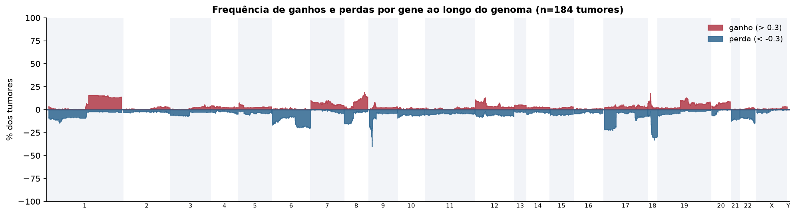
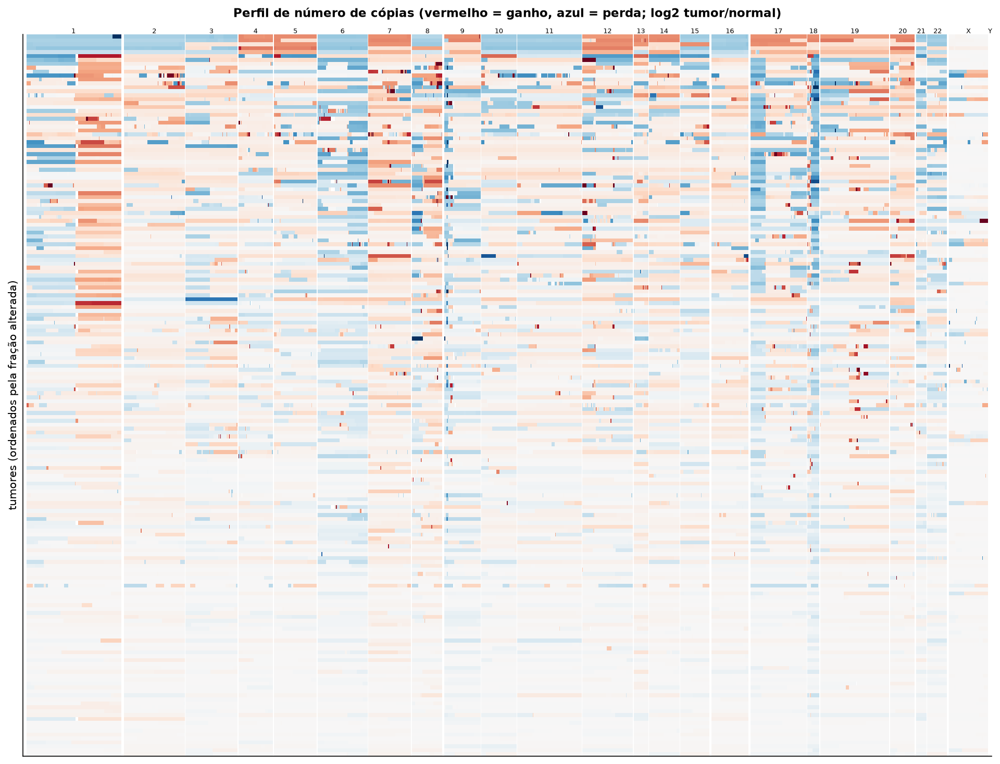
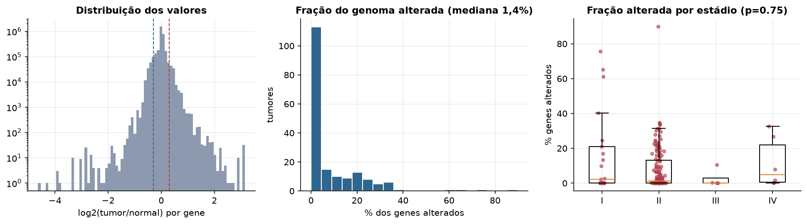
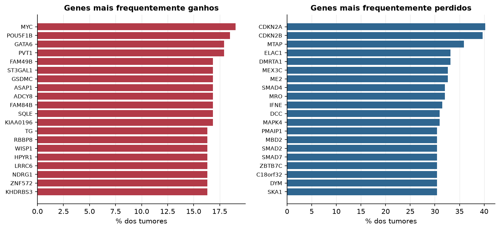

PAAD · Número de cópias (CNV)
Affymetrix SNP6, segmentos whitelisted do PanCanAtlas · gerado em 22/10/2026 02:33
184tumores
17.738genes
1,4%fração alterada mediana
85segmentos/tumor (mediana)
Fonte: SNP6 whitelisted (PanCanAtlas); nível de gene calculado dos segmentos (hg19)
O valor por gene é o do segmento que cobre o meio do gene (log2 tumor/normal, hg19). Sem correção de pureza e ploidia: tumores com pouca célula tumoral têm valores atenuados. Para chamadas discretas (−2 a 2), use o GISTIC2 do PanCanAtlas ou o ABSOLUTE.
Principais resultados
- Mediana de 1,4% dos genes com ganho ou perda por tumor (limiares log2 de 0.3 e -0.3).
- O cromossomo com mais ganhos em média é o 8 (7,6% dos tumores por gene) e o com mais perdas é o 18 (20,4%).
- Genes mais ganhos: MYC (19%), POU5F1B (18%), GATA6 (18%), PVT1 (18%), FAM49B (17%), ST3GAL1 (17%). Genes mais perdidos: CDKN2A (40%), CDKN2B (40%), MTAP (36%), ELAC1 (33%), DMRTA1 (33%), MEX3C (33%).
- Fração alterada por estádio: Kruskal-Wallis p=0.75.
Paisagem ao longo do genoma


Carga de alterações

Genes recorrentes

Top 25 genes por frequência de ganho
| gene | chrom | % ganho | % perda | média log2 |
|---|---|---|---|---|
| MYC | 8 | 19 | 1.6 | 0.168 |
| POU5F1B | 8 | 18.5 | 1.6 | 0.165 |
| GATA6 | 18 | 17.9 | 2.2 | 0.107 |
| PVT1 | 8 | 17.9 | 2.2 | 0.132 |
| FAM49B | 8 | 16.8 | 2.2 | 0.124 |
| ST3GAL1 | 8 | 16.8 | 1.6 | 0.129 |
| GSDMC | 8 | 16.8 | 2.2 | 0.124 |
| ASAP1 | 8 | 16.8 | 2.2 | 0.124 |
| ADCY8 | 8 | 16.8 | 2.2 | 0.124 |
| FAM84B | 8 | 16.8 | 2.2 | 0.127 |
| SQLE | 8 | 16.8 | 2.2 | 0.132 |
| KIAA0196 | 8 | 16.8 | 2.2 | 0.132 |
| TG | 8 | 16.3 | 2.2 | 0.12 |
| RBBP8 | 18 | 16.3 | 4.3 | 0.084 |
| WISP1 | 8 | 16.3 | 2.2 | 0.119 |
| HPYR1 | 8 | 16.3 | 2.2 | 0.12 |
| LRRC6 | 8 | 16.3 | 2.2 | 0.12 |
| NDRG1 | 8 | 16.3 | 2.2 | 0.119 |
| ZNF572 | 8 | 16.3 | 2.2 | 0.13 |
| KHDRBS3 | 8 | 16.3 | 2.2 | 0.121 |
| EFR3A | 8 | 16.3 | 2.2 | 0.12 |
| TMEM65 | 8 | 16.3 | 2.2 | 0.126 |
| TRMT12 | 8 | 16.3 | 2.2 | 0.126 |
| RNF139 | 8 | 16.3 | 2.2 | 0.126 |
| TATDN1 | 8 | 16.3 | 2.2 | 0.126 |
Top 25 genes por frequência de perda
| gene | chrom | % ganho | % perda | média log2 |
|---|---|---|---|---|
| CDKN2A | 9 | 0.5 | 40.2 | -0.358 |
| CDKN2B | 9 | 0.5 | 39.7 | -0.348 |
| MTAP | 9 | 0.5 | 35.9 | -0.303 |
| ELAC1 | 18 | 2.2 | 33.2 | -0.238 |
| DMRTA1 | 9 | 0.5 | 33.2 | -0.28 |
| MEX3C | 18 | 2.2 | 32.6 | -0.246 |
| ME2 | 18 | 2.2 | 32.6 | -0.222 |
| SMAD4 | 18 | 2.2 | 32.1 | -0.239 |
| MRO | 18 | 2.2 | 32.1 | -0.216 |
| IFNE | 9 | 1.1 | 31.5 | -0.238 |
| DCC | 18 | 1.6 | 31 | -0.229 |
| MAPK4 | 18 | 2.2 | 31 | -0.207 |
| PMAIP1 | 18 | 1.6 | 30.4 | -0.202 |
| MBD2 | 18 | 1.6 | 30.4 | -0.212 |
| SMAD2 | 18 | 1.6 | 30.4 | -0.203 |
| SMAD7 | 18 | 1.6 | 30.4 | -0.204 |
| ZBTB7C | 18 | 1.6 | 30.4 | -0.203 |
| C18orf32 | 18 | 1.6 | 30.4 | -0.204 |
| DYM | 18 | 1.6 | 30.4 | -0.204 |
| SKA1 | 18 | 2.7 | 30.4 | -0.2 |
| TMX3 | 18 | 1.6 | 30.4 | -0.211 |
| CDH19 | 18 | 1.6 | 30.4 | -0.206 |
| DSEL | 18 | 1.6 | 30.4 | -0.206 |
| CCDC102B | 18 | 1.6 | 30.4 | -0.207 |
| DOK6 | 18 | 2.2 | 30.4 | -0.202 |